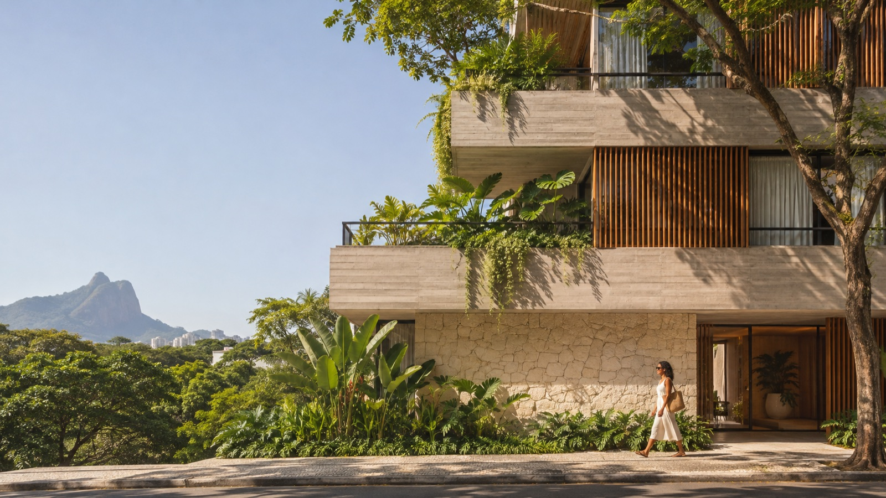

Arquitetura para a vida cotidiana.
A Morada Urbana explora como apresentar projetos residenciais com clareza. A navegação parte de fotografias amplas, passa pelas características de cada proposta e chega aos detalhes que ajudam a imaginar a rotina em cada espaço.
Explorar empreendimentos